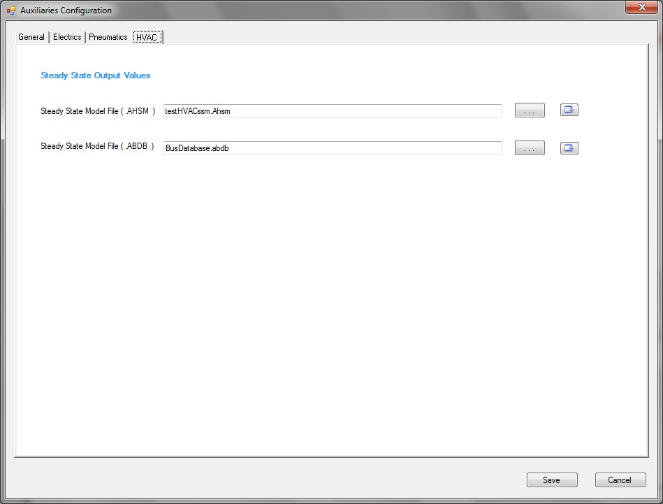
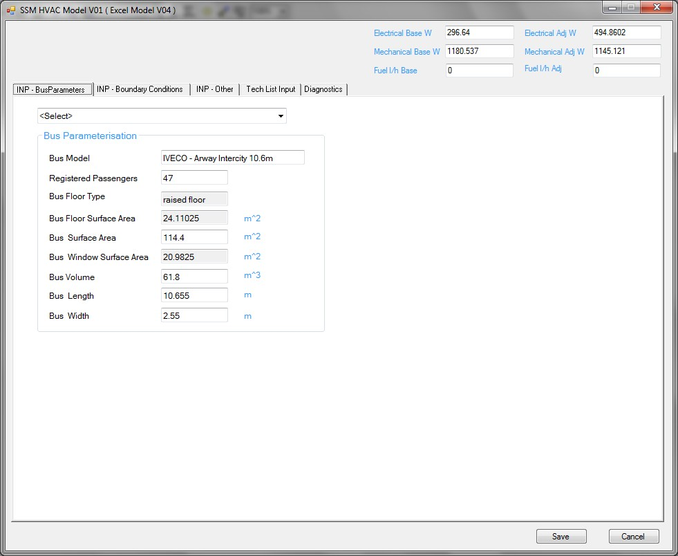
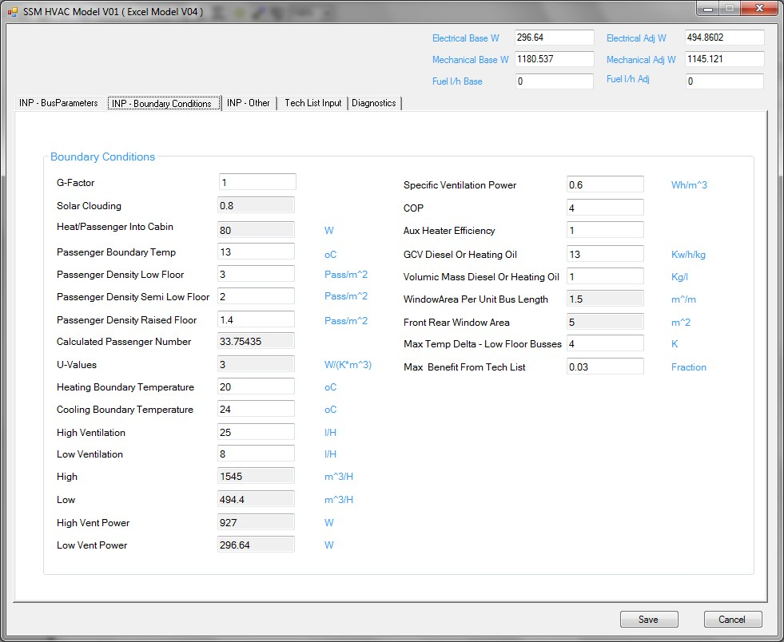
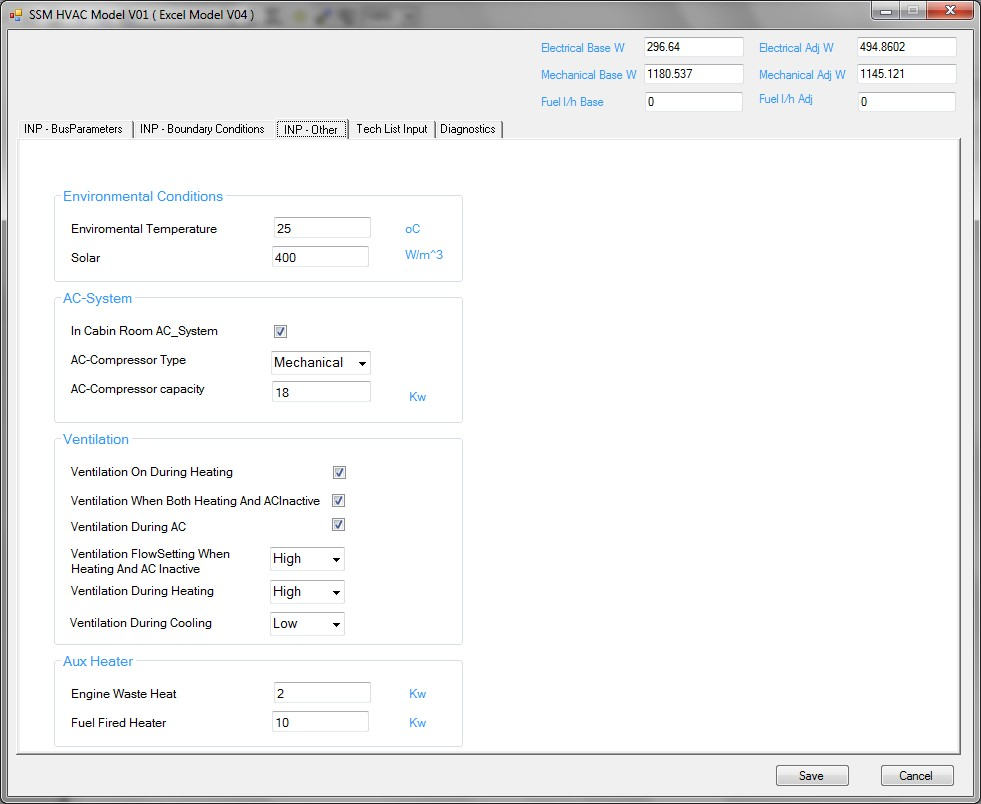
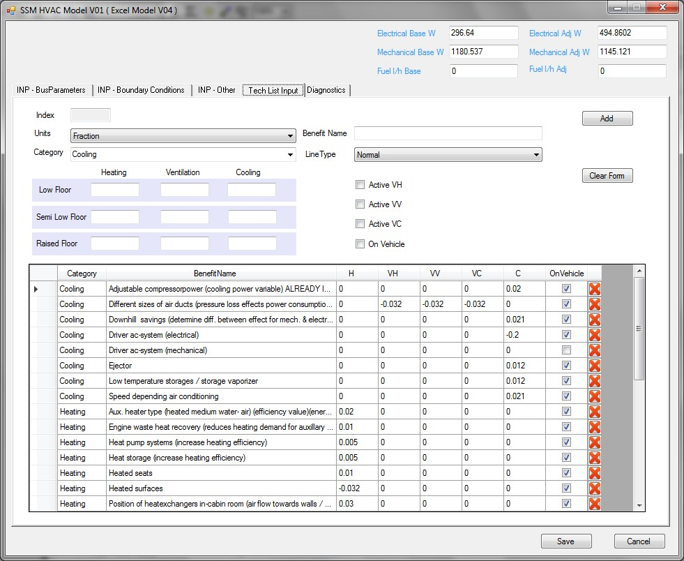

HVAC Auxiliaries Editor

Description
The “HVAC” tab defines various parameters for heating, ventilation and air conditioning (HVAC) auxiliaries used on the vehicle, calculated from the HVAC Steady State Model (HVAC SSM):
· Filepath to the Steady State Model File (.AHSM)
Files can be imported by clicking the browse button adjacent to the HVAC “Steady State Model File (.AHSM)” text box.
· Filepath to the Bus Parameter Database (.ABDB)
Files can be imported by clicking the browse button adjacent to the HVAC SSM bus parameters database file (.ABDB) text box. The bus parameter database contains a list of default parameters for a number of pre-existing/defined buses that can be quickly switched between within the HVAC SSM Editor module.
Outputs from the HVAC SSM include:
· Electrical Load Power Watts
· Mechanical Load Power Watts
· Fuelling Litres Per Hour
HVAC Steady-State Model Editor
The HVAC Steady-State Model (HVAC SSM) Editor defines various data and parameters for calculation of HVAC auxiliary demands (electrical, mechanical and fuelling) from the vehicle, replicating the key inputs/functionality from the HVAC CO2SIM model developed for ACEA:
· Bus Parameters
· Boundary Conditions
· Other
· Tech List Input
· Diagnostics
At the top
of the window, two sets of outputs are presented for electrical, mechanical and
fuelling demand:
· ‘Base’ values: These are the calculated resulting demands from the inputs on the ‘Bus Parameters’, ‘Boundary Conditions’ and ‘Other’ tabs.
· ‘Adjusted’ values: these are the final values output from the model, which additionally factor in the HVAC technologies included in the ‘Tech List Input’ tab.
Bus
Parameters

Input bus parameters can be edited directly or imported/calculated from the Bus
Parameter Database (.abdb) file via the ‘<Select>’ drop-down box at the
top of the page. Parameters in the accompanying database file (.abdb) include:
· Bus Model Name (free text)
· Type (i.e. ‘raised floor’, ‘semi low floor’, or ‘low floor’)
· Engine Type (only ‘diesel’ is currently supported)
· Length in m,
· Wide in m,
· Height in m,
· Registered passengers
Boundary
Conditions

On this tab the various boundary conditions for the HVAC SSM calculations can
be set. Certain fields (greyed out) are locked and not editable, containing fixed
default values.
Other

On this tab a number of other parameters for the HVAC SSM calculations can be
set:
· Environmental conditions
· AC System specifications/type
· Ventilation settings
· Auxiliary Heater parameters: the ‘Engine Waste Heat’ values are indicative, used to check/determine the preliminary results presented at the top of the window. More accurate estimates of the available waste heat are used during the actual model runs, which are determined via a pre-run of the model over the selected drive-cycle.
Tech List
Input

To determine energy consumption of a certain bus-HVAC system combination, a
customisable list of technologies may be added/edited on this tab to allow to
take special features into account which have a reducing or increasing
influence. Because several technologies are only available for certain bus
types, the list has to be bus type-specific. A number of technologies have been
pre-defined according to the HVAC CO2SIM model developed for ACEA, however
these may be deleted, edited or added to as required on this tab.
Diagnostics
The final ‘Diagnostics’ tab provides a summary of the resulting outputs from the HVAC Tech List tab.
File Format
The HVAC SSM (.ahsm) and Bus Parameter Database (.abdb) files
use the VECTO CSV format.
Controls
 Open file
browser for the HVAC SSM file (.ahsm) or Bus Parameter Database (.abdb) files
Open file
browser for the HVAC SSM file (.ahsm) or Bus Parameter Database (.abdb) files
 View file contents or navigate to folder
View file contents or navigate to folder
 Tick box to activate/deactivate certain options from
the list
Tick box to activate/deactivate certain options from
the list
 Add
button to add a newly defined technology option to the list
Add
button to add a newly defined technology option to the list
 Delete
button to remove technology options from the list
Delete
button to remove technology options from the list
 Clear Form button
Clear Form button
 Save and close file
Save and close file
 Cancel
without saving
Cancel
without saving